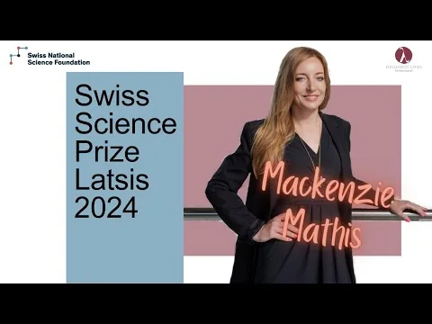
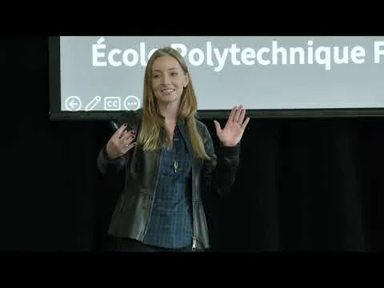
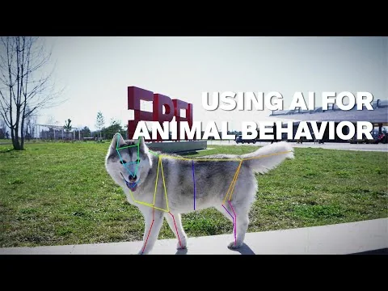
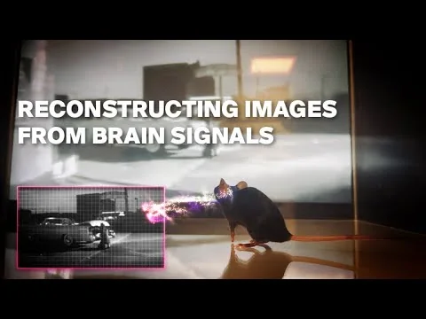
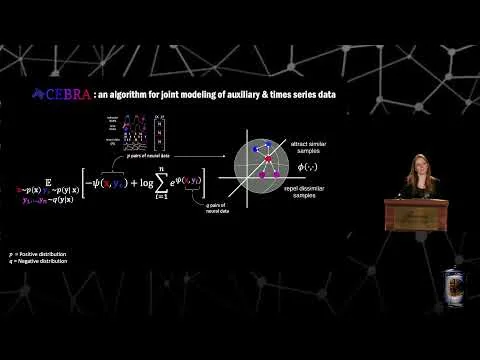
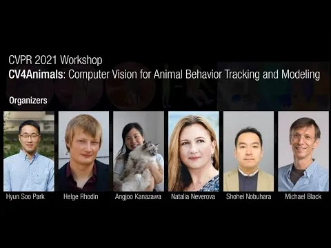
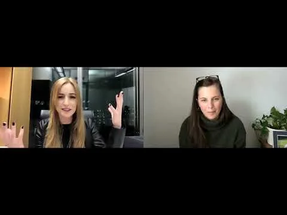
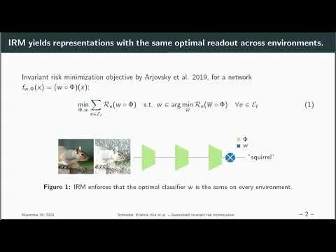

News
Lab timeline.
Papers, prizes, grants and people, from the lab's opening at Harvard in 2017 to today at EPFL.
Papers & releases
Awards
Grants
People
Talks & media
Watch and listen.

Latsis Prize 2024: Neuroscientist Mackenzie Weygandt Mathis tracks behaviour to understand the brain
From LSD to AI with Switzerland's Brain Explorers · Hello World with Ashlee Vance
Tracking behaviour to understand the brain: Mackenzie Weygandt Mathis

Towards understanding adaptive intelligence

Unifying behavioral analysis through animal foundation models

Predict what a mouse sees by decoding brain signals

COSYNE 2023, Session 1

CV4Animals @ CVPR 2021: Mackenzie Weygandt Mathis

Interview with Dr. Mackenzie Weygandt Mathis: deep neural networks were built with inspiration from the brain

Generalized Invariant Risk Minimization (PreReg @ NeurIPS 2020)
People, places & celebrations